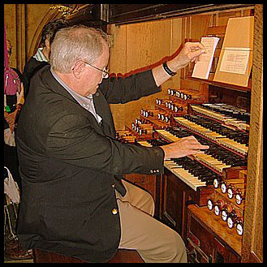

George Baker, Organist
A native of Dallas, a young George Baker won the American Guild of Organists National Competition in Organ Playing in 1970 and created a sensation in the organ world with his subsequent featured recital for that organization's national convention two years later. He then went to Paris to study organ and improvisation as well as to record. He returned to America to teach organ, then entered medical school. Almost three decades later he has come full circle, returning to music as a performer, improviser, composer, and teacher.
George Baker has received training with some of the finest organ teachers of the twentieth-century. He obtained his Bachelor's degree from Southern Methodist University under Robert Anderson, after which he traveled to Paris to study with Marie-Claire Alain, Pierre Cochereau, Jean Langlais, and André Marchal. During his time in France, Baker earned the Prix de Virtuosité with Mention Maximum from the Schola Cantorum, under Langlais. Ultimately, he returned to the United States where he earned a Master of Music degree on full scholarship from the University of Miami, a Doctor of Musical Arts from the University of Michigan, and began teaching at Catholic University in Washington D.C. before deciding to undertake the challenge of becoming a medical doctor. Although he obtained his M.D. and became a dermatologist, Dr. Baker never ceased performing, composing, teaching, and recording.
In his early years as a musician, George Baker won first prizes by unanimous jury decisions in several major organ competitions including the American Guild of Organists (Buffalo, 1970), the Grand Prix de Chartres (Chartres, France, 1974), and the International Improvisation Competition (Lyon, France, 1979). His recording credits include the complete organ works of J. S. Bach (1979) and the complete organ works of Louis Vierne (world premiere recording, released in 1994, a project he shared with Pierre Cochereau). He has been awarded three French Grand Prix du Disque, two of which were for The Complete Organ Works of Darius Milhaud. In 1995, the eight CD Vierne set won the coveted Grand Prix Spécial du Jury from the Nouvelle Académie du Disque Français. In 2000, the same recording won a critic's choice award from American Record Guide. Baker's recordings are available from Organ Historical Society, Solstice Music, and Spinning Dog Records.
George Baker first appeared on the roster of Karen McFarlane Artists as a young artist, to which he has returned at the beginning of the new millennium. He was a featured artist at the 2004 AGO National Convention in Los Angeles. He played his first public organ concert in 1964, and since then, he has played hundreds of concerts in the USA, France, Germany, and Italy.
Media
Concert played by George Baker at the University of Oklahoma in September 2015, as part of the Mildred Andrews tribute celebration. Two of his original compositions are included in this program. At 7:00 is Procession Royale, and at 58:50 is Variations on Rouen.
George Baker playing at
St-Ouen de Rouen, July 2008